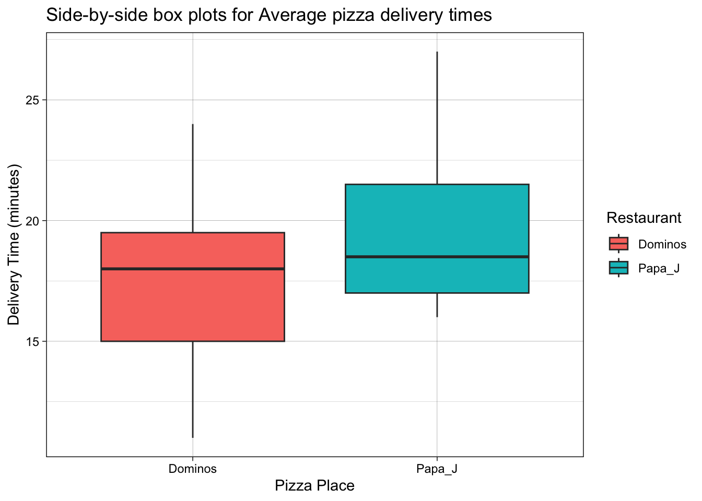
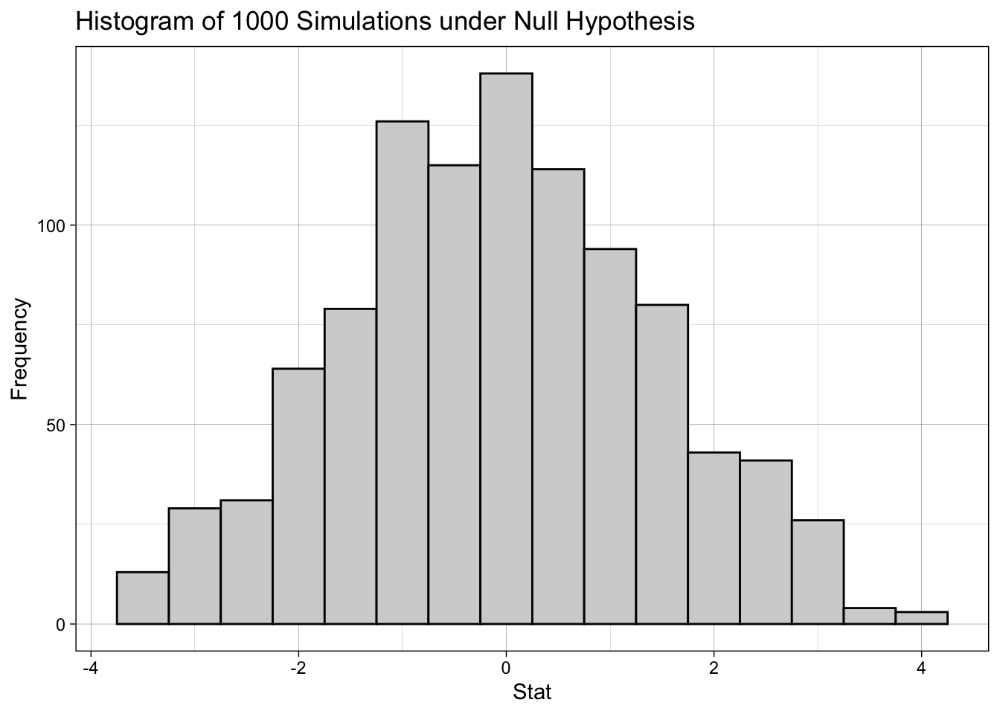
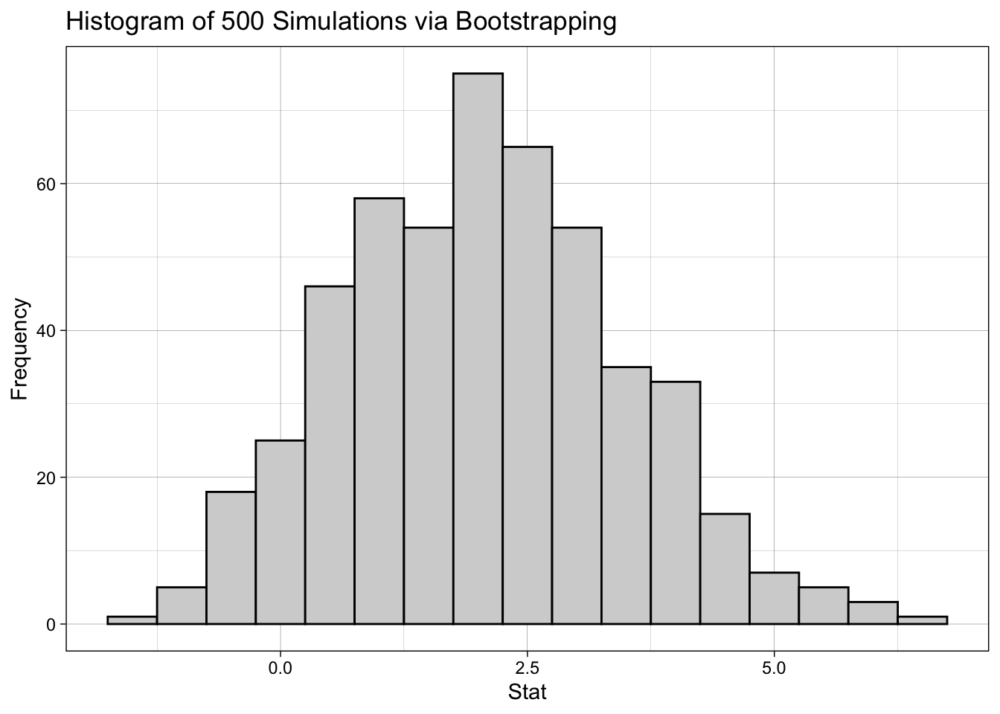
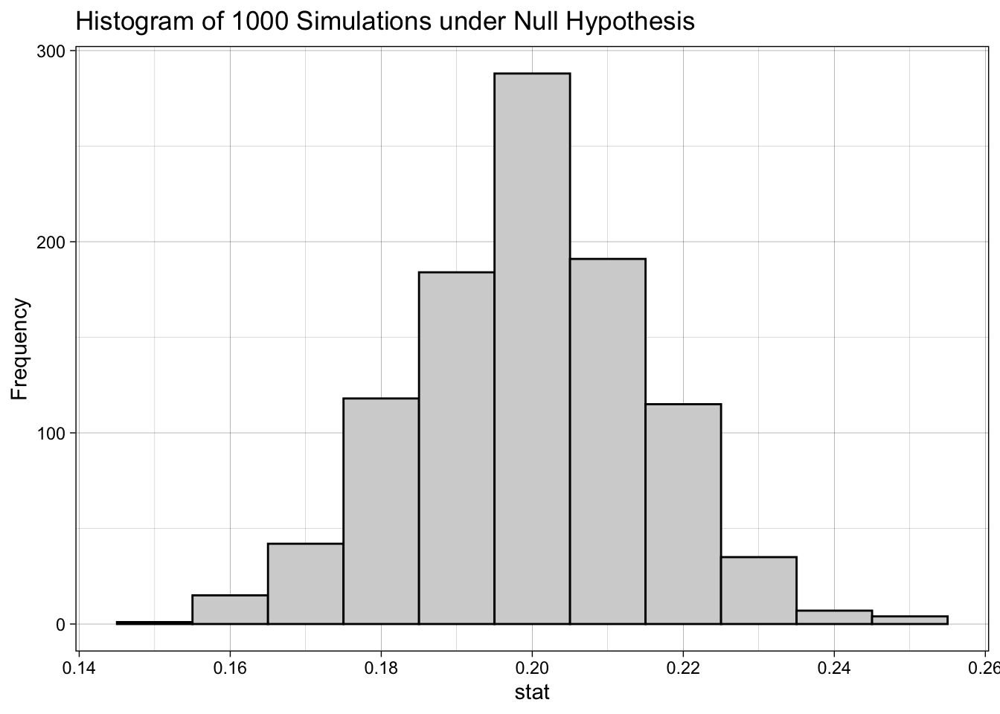
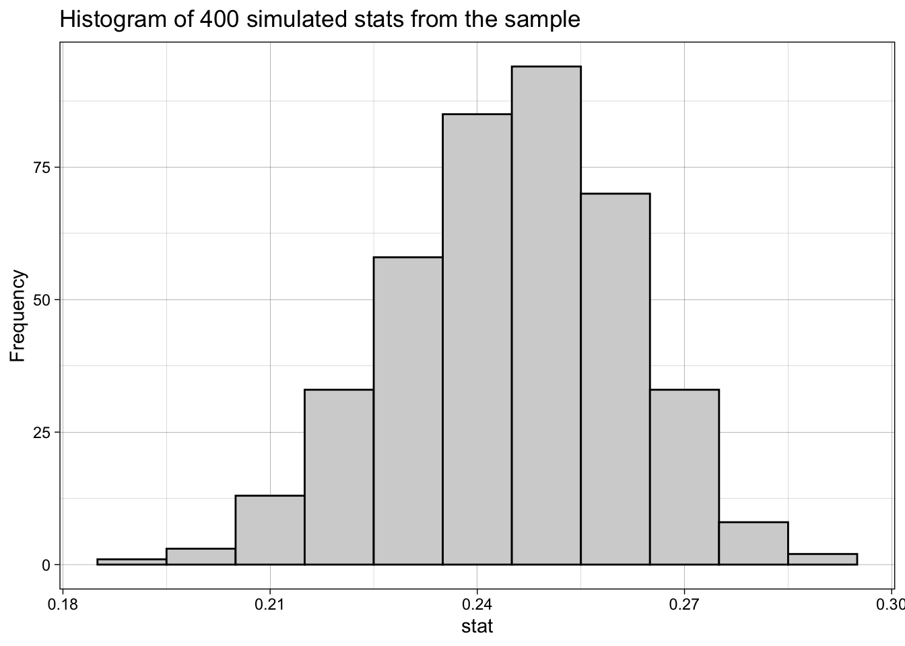
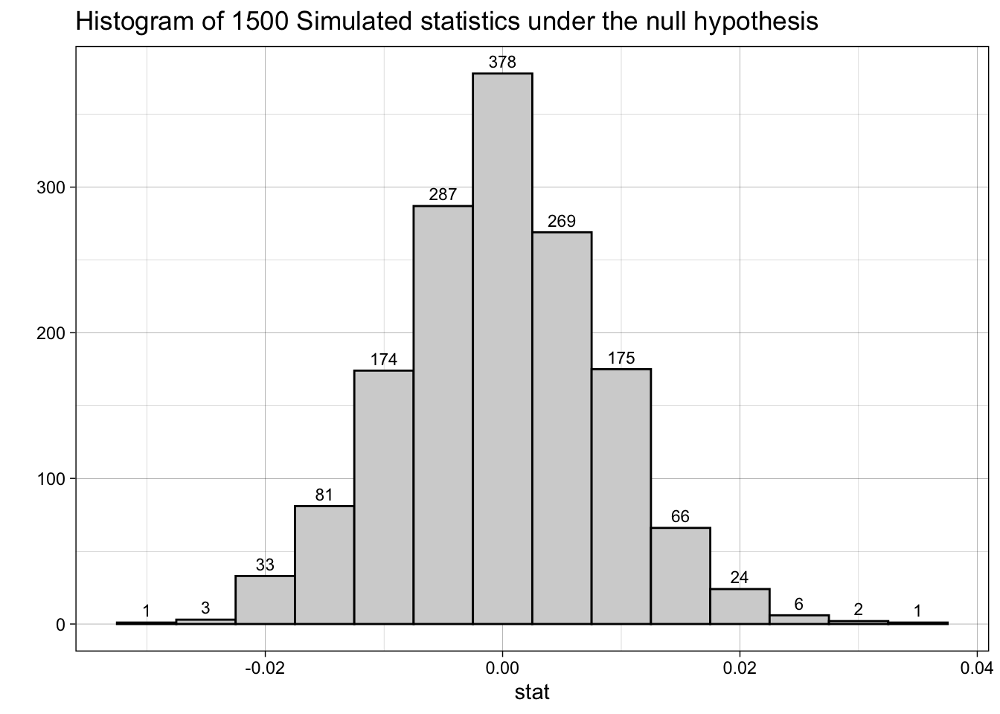
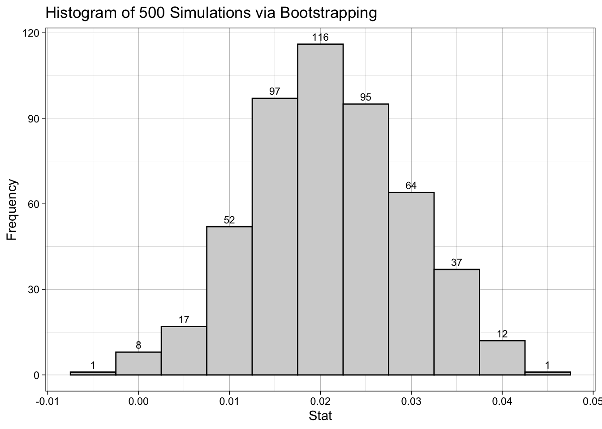
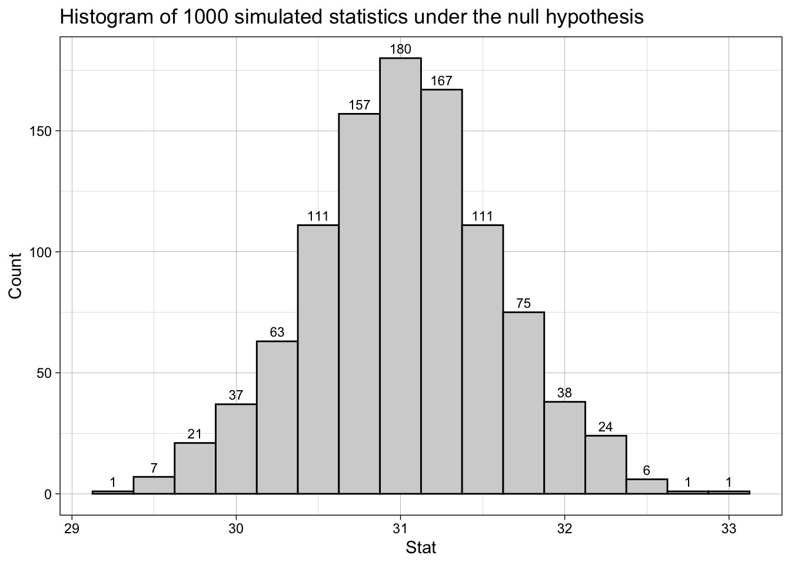

Warning: package 'dials' was built under R version 4.6.1Exam 2 Review
Much of the material on this review is based on statistical inference methods including hypothesis testing and confidence intervals using simulation-based methods (randomization tests and bootstrapping). Most of the material was covered starting the week before spring break to mid April, 2026. Hypotheses tests will be based on a discernibility level of 0.05 (5%).
Be sure to try these problems on your own before coming for the review session.
Problem 1
We have discussed various types of statistical inference methods including:
A: Inference for difference in two proportions (lab 6 & 7)
B: Inference for difference in two means (labs 8)
C: Inference for a single mean (lab 9)
D: Inference for a single proportion (OneNote Activity 4/10)
Read the following scenario carefully and answer the questions that follow.
A company designs workplace environments to improve employee productivity and well-being. Employees are provided with different types of office setups (e.g., open-plan spaces, private offices, standing desks, relaxation areas), and managers conduct experiments to determine which setups lead to the best outcomes.
For each of the following research questions, identify the predictor and response variables, parameter of interest, inference method (choose from list above), then state the hypotheses.
Research Question: Do employees in private offices exhibit different overall job satisfaction levels compared to employees in open-plan spaces?
Setup: Employees are randomly assigned to one of two workspace environments: private offices or open-plan spaces. After 3 months, each employee’s job satisfaction level is measured on a scale of 0 to 100.Predictor and response variables:
Parameter of interest:
Appropriate Inference method:
Null and Alternative Hypotheses:
Research Question: Is the proportion of employees in open-plan workspaces who experience high work-related stress lower than the 25% reported in a previous study?
Setup: Employees working in open-plan work spaces completed a survey asking whether or not they experienced high work-related stress. It was found that 27% experienced high work-related stress.Predictor and response variables:
Parameter of interest:
Appropriate Inference method:
Null and Alternative Hypotheses:
Research Question: Is the average job satisfaction score (on a scale of 0-100) for employees working in private offices different from one reported in a previous study (75%)?
Setup: Employees working in private offices completed a job satisfaction survey and on average the value was 71%.Predictor and response variables:
Parameter of interest:
Appropriate Inference method:
Null and Alternative Hypotheses:
Research Question: Is there an association between office space type (open-plan or private offices) and overall stress levels (High vs Low)?
Setup: Over a 3-month period, the researchers measure the average stress levels (High or Low) of employees in private offices and those in open-space offices.Predictor and response variables:
Parameter of interest:
Appropriate Inference method:
Null and Alternative Hypotheses:
Problem 2
Helen saw a commercial on TV claiming that Domino’s restaurant has the fastest pizza delivery times in her area. She decided to check this claim by running a hypothesis test comparing delivery times for Domino’s and Papa John’s. She took a random sample of several of the two restaurants in her home area and found the average delivery times to be 17.5 minutes for Domino’s and 19.6 minutes for Papa John’s. She also summarized the data as shown on the following side-by-side box plots:

Based on the side-by-side box plots above, comment on the distribution of the average delivery times for the two pizza restaurants.
Find the relevant observed statistic for the scenario described above.
State the null and alternative hypotheses in words and in symbols.
Helen generated 1,000 simulations of the statistic under the null model and created the histogram shown below. Each bin is 0.5 minutes wide.

Estimate of the P-value (show/explain work) and write down the conclusion for your hypothesis test in context.
The histogram below shows the bootstrap distribution for the statistic of interest. The distribution was generated by re-sampling from the original sample.

- Use the histogram to find the 95% confidence interval. Be sure to give a detailed explanation on how you arrived at your answer.
Problem 3
Back in 2021, a poll found that 1 in 5 adults (20%) living in Seattle, Washington, supported proposals to reduce police department budgets (“defund the police”). A researcher decided to investigate this claim by surveying 650 randomly selected Seattle residents. It was found that 159 of the 650 respondents supported defunding the police.
What is the parameter of interest in this scenario? Calculate the observed statistic.
Write the appropriate null and alternative hypotheses (in words and symbols) to test the claim.
Describe the setup of a simulation model and the steps for its implementation to generate the null distribution. Also explain how to obtain a p-value based on the simulated data.
The histogram below shows the distribution of 1,000 simulated statistics under the null hypothesis. Each bin is 0.01 units wide.

- Estimate the p-value using the histogram then write your conclusion for the hypothesis test in context. Be sure to show/explain your work.
- Use the bootstrap distribution below (bin width is 0.01) to estimate the 95% confidence interval. Interpret the interval and state whether it supports the conclusion reached under the hypothesis test. Explain.

Problem 4
The Airlines data set from the Stat2Data package contains information on over 10,000 commercial flights operated by Delta and American Airlines. A business analyst wants to conduct a statistical analysis to determine whether the proportion of arrival delays differs between the two airlines. The table below summarizes the arrival status (delayed or on time) by airline:
| Airline | Delayed | OnTime | Total |
|---|---|---|---|
| Delta | 659 | 2344 | 3003 |
| American | 1450 | 5880 | 7330 |
| Total | 2109 | 8224 | 10333 |
Identify the population and parameter of interest in this scenario. Also, calculate the observed statistic.
State the null and alternative hypotheses in words and in symbols.
The histogram below shows the distribution of 1500 simulated statistics under the null hypothesis. Each bin is 0.005 wide.

- Use the histogram to estimate the p-value (show/explain work) then write your conclusion for the hypothesis test in context.
- The histogram below shows the bootstrap distribution for the statistic of interest. The distribution was generated by re-sampling from the original sample. The numbers on each bin represent the counts for the bin. Each bin is 0.005 units wide.

Use the histogram to estimate the 95% confidence interval. Show/explain your work.
Interpret the confidence interval in context. Does this interval support the findings under the hypothesis testing part? Explain.
Problem 5
The average (mean) ACT score for students at a certain college is believed to be 31. A random sample of 100 students produced a sample mean of 30. We want to determine, via simulation-based hypothesis testing, whether this data provides strong evidence that the true average ACT score at this college is lower than 31.
Identify the population, parameter, sample, and the observed statistic in this scenario.
State the null and alternative hypotheses in words and symbols.
Describe the setup of a simulation model and the steps for its implementation to generate the null distribution. Also explain how to obtain a p-value based on the simulated data.
The histogram below shows the distribution of 1,000 simulated statistics under the null hypothesis. Use the histogram to estimate the P-value then write your conclusion in context.

Suppose we generate a confidence interval to estimate the true ACT score, would you expect 31 to be inside or outside the interval? Why?